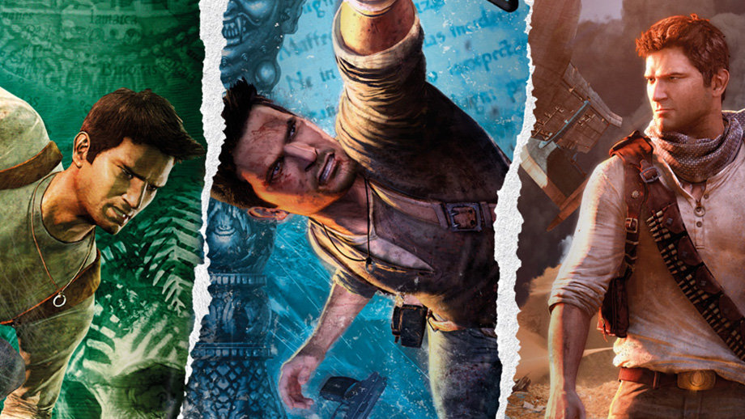

Uncharted is an action-adventure third-person shooter platform video game series developed by Naughty Dog and published by Sony Interactive Entertainment for PlayStation consoles. The series follows treasure hunter Nathan "Nate" Drake as he travels around the world to uncover various historical mysteries.
The series includes Uncharted: Drake's Fortune, its sequels Uncharted 2: Among Thieves, Uncharted 3: Drake's Deception, and Uncharted 4: A Thief's End, as well as the prequel Uncharted: Golden Abyss, which was released for Sony's PlayStation Vita handheld system, as was the card game spin-off Uncharted: Fight for Fortune. The second game in the Uncharted series, Among Thieves, is the highest rated title of the series so far, currently standing as the third highest rated PlayStation 3 title on Metacritic,[1] and won numerous Game of the Year awards.
